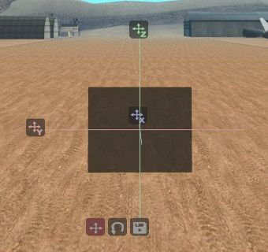

Mapping tools
A set of popular Grand Theft Auto modding tools that lets you create, edit, and save custom maps directly in the game. Allows you to place objects, props, and structures to create new locations. Using the map editor, you can build your own race tracks, safehouses, stunt arenas, and cinematic sets, making GTA more dynamic and creative.

SA:MP mapping tools

If you need to quickly view the map without editing, then it's worth looking towards Map Construction or Euryopa. Euryopa only works for viewing maps without the possibility of editing, simulates the same graphics engine as the game. Map Construction has broader functionality, including the ability to edit.
The most popular map editors are Texture Studio and Ultimate Creator from NexiusTailer. Both editors are multifunctional, and perfectly cope with the tasks. Texture Studio does not have the ability to create Actors, Pickups, etc. unlike Ultimate Creator. An alternative option is a more specific editor. Fusez's Map Editor. They have already been compared earlier in the note Mapping Toolkit's. The choice of the map editor is entirely your own choice, focus on what is more convenient for you.
Map editors
Lua scripts
Other tools
MTA mapping tools
Multi Theft Auto mapping tools are integrated, user-friendly resources for custom map creation, editing, and management in GTA: San Andreas multiplayer. Key tools include the built-in map editor for placing objects, the mapmanager for dynamic server-side loading, and community-created plugins like the Moving Objects Editor for advanced, interactive element
Other multiplayer's mapping tools
Various utilities from other multiplayer games based on GTA3D Universe that are not included in the main categories
You can download the necessary files from our mirror on Google Drive Google Drive or Mega.nz Mega